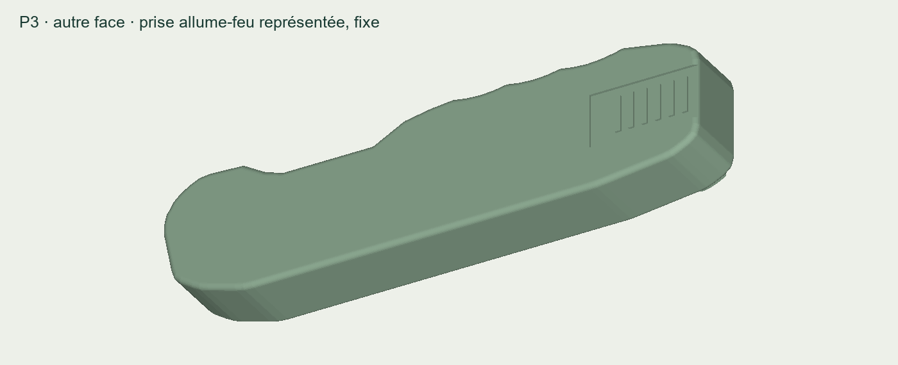
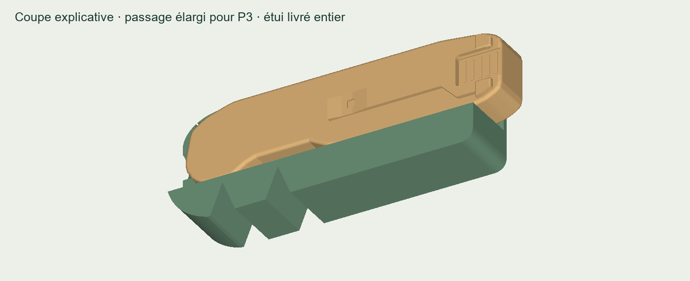

Ton couteau arrondi.
Une réserve pour le verrou.
La nouvelle maquette P3 gagne 1 mm d’épaisseur au total. L’étui E2 est adapté à ce volume. Les deux faces du manche sont représentées, avec la prise allume-feu au dos.
Épaisseur du manche
Avant : 14,4 mm. Clip comprise : 17,1 mm au lieu de 16,1 mm.Estimation retenue pour cet essai
La géométrie du vrai verrou reste à mettre au point; cette maquette sert à comparer la prise en main.
Comprendre le verrou envisagé dans le couteau complet, en 3D — illustration distincte du repère fixe imprimé.
À envoyer à l’atelier
Envoie simplement le lien de cette page. Le bouton « Tout télécharger » contient les STL, leurs équivalents 3MF, les images et une fiche d’impression. Choisir un seul format par pièce, en millimètres à 100 %.
- Couteau P3 — STL
- Étui E2 pour P3 — STL
- Petit gabarit de passage — STL facultatif
- Fiche d’impression — PDF

Le nouvel étui
E2 mesure 117 × 48,4 × 25,75 mm. Son passage prévoit 0,6 mm de jeu par face autour de l’enveloppe du couteau, clip comprise. Le talon reste accessible sur 8 mm. Le gabarit permet un premier essai de passage à moindre coût.

L’étui livré est entier. Il n’a pas de rétention fonctionnelle : le couteau peut glisser dehors si on le retourne. Utiliser le couple P3 + E2 pour ce nouvel essai.
Ce qui a été vérifié
Chaque STL forme un solide fermé unique. Import des STL et 3MF et tranchage réussis dans PrusaSlicer. Le passage des fichiers exportés a été contrôlé sur 455 positions sans collision, avec des décalages jusqu’à ±0,5 mm. L’ajustement et le confort réels seront à vérifier sur les impressions.
Pourquoi cette estimation ?
Le budget choisi remplace une platine de 0,65 mm par une épaisseur de référence de 1,27 mm, puis ajoute 0,38 mm de réserve d’intégration : au total, 1 mm. Le stock de 1,27 mm est proposé pour des platines par Jantz. Cela documente une épaisseur plausible de matériau, pas la résistance ni le fonctionnement du futur verrou.
Revoir le couteau complet animé précédent — présentation antérieure, dimensions non actualisées à P3.